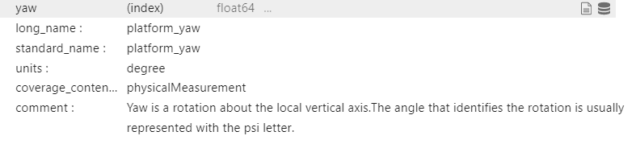

Variable Metadata
We are currently working on identifying the correct names and attributes for our robotic and scientific variables following, when possible, the existing standards. We decided on a minimum set of attributes for each variable. Such attributes are taken from ACDD and CF conventions. The attributes should be:
long_name: in case a standard_name is not found on CF convention, the long_name will assume that role. Otherwise standard_name and long_name coincide.
standard_name: Standard name following CF table.
units: A character string that specifies the units used for the variable’s data (empty if dimensionless).
coverage_content_type: An ISO 19115-1 code to indicate the source of the data e.g., physicalMeasurement, auxiliaryInformation, or modelResult).
comments: Miscellaneous information about the data or methods used to produce it. This is especially important for the variables that do not have a standard_name. Can be omitted in the other case.
Considering that in the telemetry of a robotic vehicle the same variable can be measured by two or more different sensors (e.g. GPS position given by 3, 4 different GPS on board), we need to be able to give a custom name to each variable in the log, but also a pointer to the standard variable. In that way, the log can be automatically used to generate a NetCDF4 FAIR-compliant file, where besides the global metadata, each variable contains all needed attributes to be found and understood both by machine and humans.
Therefore, the idea is to create a light JSON database that contains all of our robotic and scientific variables, comprising the attributes mentioned above. Each variable in the database is saved with a unique ID.
The log file should then contains two lines for the the header like in the following example:
NGC_latitude, NGC_longitude, MBES_latitude, MBES_longitude
271595412737, 32523223453, 271595412737, 32523223453
45.438759, 12.327145, 45.515624, 12.419372
45.438760, 12.327148, 45.515635, 12.419332
45.438750, 12.327103, 45.515690, 12.419345
As we can see the first header line contains the custom name. The second one contains the ID of the standard variable that it refers to. The two different latitudes refer to the same ID as well as the two longitudes. When the NetCDF notebook of this repository is launched, it reads the header of the log files, get the IDs, open the JSON database and find the correspondent attributes for that specific variable. In this case, the database looks something as simple as the following JSON snippet:
"271595412737": {
"long_name": "latitude",
"standard_name": "latitude",
"units": "degree_north",
"coverage_content_type": "physicalMeasurement",
"comments": "Latitude measured by GPS"
},
"32523223453": {
"long_name": "longitude",
"standard_name": "longitude",
"units": "degree_east",
"coverage_content_type": "physicalMeasurement",
"comments": "Longitude measured by GPS"
}
By retrieving the attributes using the ID, it can then fill the NETCDF and makes it FAIR-compliant. When the NetCDF is open, the variable will be visualized as follow:
